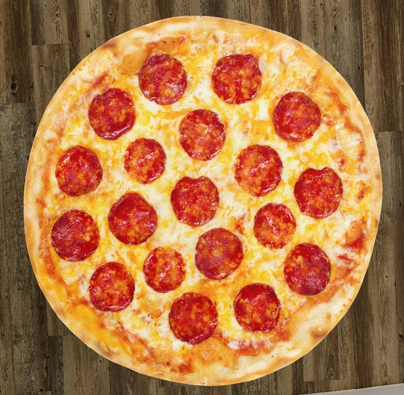

Resep membuat Beef Pepperoni Pizza
Bahan adonan:
Bahan topping:
Cara membuat:
- Untuk memastikan ragi aktif, larutkan ragi ke dalam 125 air hangat yg uda dicampur gula. Tunggu hingga berbuih.
- Campur tepung + garam, lalu tuangkan air ragi, aduk, tambahkan minyak, uleni sampai tercampur rata dan kalis.
- Diamkan adonan sebentar kurang lebih 30 menit (tutup dengan plastic wrap) hingga adonan agak mengembang
- Panaskan oven pada suhu 170-200, sembari menunggu siapkan loyang bulat, olesi sdikit margarine/minyak.
- Tata adonan di loyang, pipihkan tusuk2 garpu dan bentuk sesuai selera
- Beri saus secara merata, lalu keju mozarella parut, lalu pepperoni, panggang dalam oven selama kurang lebih 30 menit api atas bawah hingga keju lumer dan pinggiran terlihat kecoklatan.
- Pizza dapat dihidangkan, sajikan bersama saus cabai/saus sambal agar lebih nikmat.
